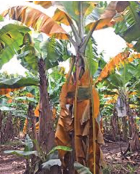
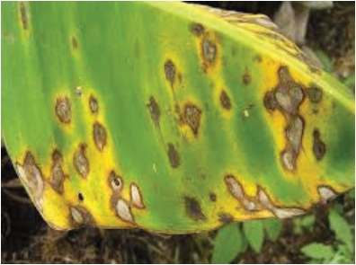
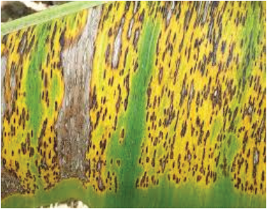

Agriculture for Secondary Schools
Management: To manage the disease, implement cultural practices like
removing infected leaves, ensuring proper plant spacing, and maintaining
efficient drainage in fields. Resistant cultivars such as the TARIBAN series,
FHIA 17, 18, 25, Williams, and Grand Nain are recommended. Overhead
irrigation is not recommended because it favours the disease. You can consult
agricultural experts for advice on the appropriate fungicides to use.
Figure 2.7: Symptoms of Black Sigatoka in banana leaf
(v) Panama disease: Panama disease, also known as Fusarium wilt is caused
by the soil-borne fungus Fusarium.spp.
Management: The disease can be managed using resistant varieties, such
as Giant Cavendish or FHIA hybrids. It is recommended to use disease-free
material (Tissue Culture and clean suckers). Other management measures
include restricting movement of plant material from infected areas to non-
infected areas (quarantine).
Figure 2.8: Symptoms of Panama disease in banana plants
32
Student’s Book Form Two